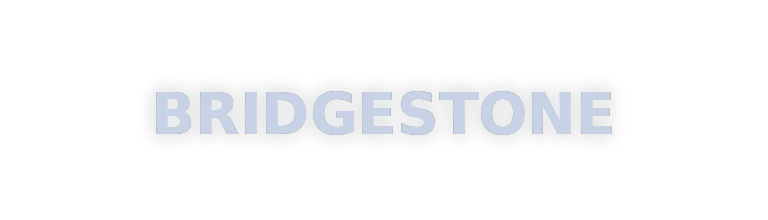

7/24 Expres
Gece gündüz arayın, ekip yola çıksın.
İskele · binek + ağır vasıta · 7/24
Binek, SUV, kamyonet ve ağır vasıta / kamyon lastiği. Konum seç — kaç dakikada yanınızda olduğumuzu gör.
Yerinizi bilmiyorsanız buradan konumunuzu ekleyin
Haritaya dokunarak olduğunuz yeri işaretleyin.
Süreler Doğan Lastik Servisi İskele konumundan hesaplanır.
7/24 lastik değişimi, yol yardım, balans ve mevsimlik montaj.
Patlak ve delikte yerinde hızlı müdahale — İskele ve çevre.
Gece gündüz Kuzey Kıbrıs yollarında expres mobil ekip.
Titreşimi keser, lastik ömrünü uzatır.
Yaz / kış lastik, ölçü ve depolama desteği.
Kamyon, otobüs, iş makinesi lastiği — yerinde müdahale.
Kamyon, otobüs, kamyonet ve iş makineleri için lastik değişimi / yol yardım.
Petlas başta — binek ve ağır vasıta markaları.

İskele merkez · hızlı çıkış · şeffaf fiyat.
Gece gündüz arayın, ekip yola çıksın.
Mobil ekipmanla bulunduğunuz noktaya geliyoruz.
Haritadan işaretleyin, tahmini varış süresini görün.
Kıbrıs’ta arayanların en çok sorduğu bölgeler — İskele üssünden ekspres çıkış.
Aramalarda öne çıkmanız için güncel lastik ve yol yardım yazıları.
Gece yolda kalanlar için hızlı arama ve doğru numara.
Yol yardımGüvenli duruş, konum atma ve expres servis adımları.
Bölgeİskele’den Mağusa’ya mobil lastik servisi hakkında.
MevsimKKTC yollarında güvenlik ve doğru zamanlama.
Kıbrıs lastikçi aramalarında en çok sorulan sorular.
Evet. Doğan Lastik Servisi İskele’de gece gündüz hizmet verir.
İskele, Gazimağusa, Karpaz, Lefkoşa, Girne ve çevre bölgeler.
0533 871 98 10 veya 0548 840 98 10’u arayın, WhatsApp’tan konum atın.
Doğan Lastik servisi İskele 7/24 lastikçi — resmi konumumuz.
Doğan Lastik Servisi
İskele · Kıbrıs 7/24 lastikçi · Yol yardım
Doğan Lastik servisi İskele 7/24 lastikçi — Google konum
Her gün 00:00 – 24:00 · Mobil + dükkan desteği